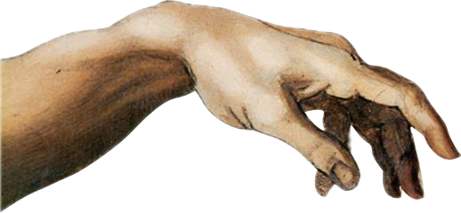
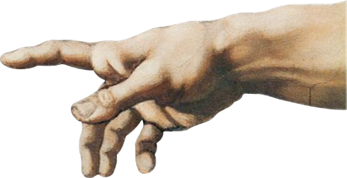

EA Consultant & Product Orchestrator.

I specialize in bridging the gap between enterprise complexity and human-centric design. Currently an EA Consultant at Invecto Technologies, where I orchestrate digital transformations through automated capability mapping and strategic alignment.
My background in Analytics at Cummins India and UX Design allows me to build products that are as logical as they are intuitive. From founder-led biker tech to autonomous AI engines, I focus on creating systems that work for people.
An autonomous engine mapping enterprise tech stacks to business capabilities. Built for modern digital consulting.
Learn more >Bulk semantic renaming for artists. Uses theme-aware unique words to organize recording sessions intelligently.
Learn more >Biker-tech ecosystem focusing on ride rituals and platform consistency for the global rider community.
Learn more >Automated growth pipeline for dental practices, from lead discovery to personalized outreach.
Learn more >Deep dive into operational automation and enterprise strategy. (Case Study PDF)
View Case Study >Detailed analysis of enterprise architecture and digital transformation outcomes. (PDF)
View Case Study >